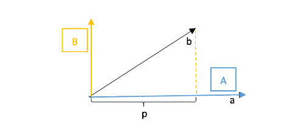

线性代数笔记(十七)——正交矩阵和Gram-Schmidt正交化
书接上一回标准正交基，讲述了该正交向量组的特性与优势，并介绍了一种将一组向量标准化为标准正交向量组的重要方法：Gram-Schmidt正交化。
正交矩阵和Gram-Schmidt正交化
标准正交基
标准正交向量组构成的空间基被称为标准正交基，它有两个特性：对标准正交向量组中任意向量\(q\)，有： \[ \begin{cases} q_i^Tq_j=0 \space (i\neq j) \\ q_i^Tq_j=1 \space (i=j) \end{cases} \]
即：向量彼此垂直，模均为\(1\)。
标准正交矩阵
将标准正交向量组中的\(q_1,q_2,...,q_n\)组成的矩阵\(Q\)被称为正交矩阵： \[ Q=\begin{bmatrix}q_1& q_2& q_3& ...& q_n\end{bmatrix} \]
显然，正交矩阵\(Q\)具有一个良好的性质：\(Q^TQ=I\) \[ Q^TQ=\begin{bmatrix}q_1\\ q_2\\ q_3\\ ...\\ q_n\end{bmatrix}\begin{bmatrix} q_1& q_2& q_3& ...& q_n\end{bmatrix}=\begin{bmatrix}1& 0& ...& 0&0\\ 0& 1& ...& 0& 0\\ ...& ...& ...& ...& ...\\ 0& 0& ...& 1& 0\\ 0& 0& ...& 0& 1\end{bmatrix}=I \]
正交矩阵
特别地，当\(Q\)为方阵时，我们称这样的\(Q\)为正交矩阵。
正交矩阵有更丰富的性质，此时的方阵\(Q\)有逆矩阵，由\(Q^TQ=I\)可知，\(Q^{-1}=Q^T\)。
置换矩阵就是个经典案例。
标准正交矩阵的应用
标准正交矩阵可以应用到投影矩阵上，我们知道：\(P=A(A^TA)^{-1}A^T\)，当\(A\)是标准正交矩阵时，有：\(Q(Q^TQ)^{-1}Q^T=QQ^T\)。特别地，若\(Q\)为方阵，此时\(QQ^T=QQ^{-1}=I\)。（说明此时投影矩阵就是单位阵\(I\)）
\(P\)的计算得到了极大的简化，对于\(P=QQ^T\)，根据前面几讲的知识，我们知道\(QQ^T\)有着一些特性：
- 是对称阵，即\(P=P^T\)
- 乘方不变性，即\(P^2=P\)
此外，对于前两讲中的拟合方程：\(A^TA\hat x=A^Tb\)，若\(A\)为标准正交矩阵，那么方程就变成了\(\hat x=Q^Tb\)。\(\hat x\)的每个分量\(\hat x_i=q_i^Tb\)，即都是\(Q\)中对应列向量与\(b\)的内积。
这个式子的物理意义就是：对已知标准正交基，向量\(b\)在第\(i\)个基上的投影就是对应基向量\(q_i^Tb\)。
因此，如果我们选择标准正交向量组作为基时，投影矩阵相关公式中的诸多计算都得到了极大的简化。
Gram-Schmidt正交化
在标准正交矩阵的应用中我们可以看到，如果能够在实际运算中采用标准正交向量组，那就可以简化相当多的运算量。然而实际情况是，我们往往拿到的都只是一组线性无关的向量，它们恰好构成标准正交基的可能性微乎其微。那么有没有一种方法，可以将任意的线性无关向量组转换为标准正交基呢？
答案是肯定的，这种方法就是”Gram-Schmidt正交化“。
Gram-Schmidt正交化的过程很简单： \[ 线性无关向量a,b\rightarrow 正交向量A,B\rightarrow 标准正交向量q_1=\frac{A}{||A||}, q_2=\frac{B}{||B||} \]
第一步转为正交向量的过程被称作Graham，第二步标准化为模1的过程被称作Schmidt。
第二步标准化的过程很好理解，对每个分量除以模量即可，正交化的过程关键在于第一步，怎么找到\(A\)和\(B\)。
以不共线的两个\(a,b\)向量为例，怎么转换成正交基呢？这就要用到投影：

我们先将\(a\)向量固定，设为\(A\)，然后将\(b\)向量投影到\(A\)上得到\(p\)，此时误差向量\(e=b-p\)所在直线的方向实际上就是另一个基向量\(B\)的方向，取投影长度为\(B\)的长度。于是有： \[ B=b-\frac{AA^Tb}{A^TA} \]
式子里\(A^Tb\)和\(A^TA\)都是内积标量值，因此上式一般写作：\(B=b-\frac{A^Tb}{A^TA}A\)的形式。
得到\(A,B\)之后，第二步就是做标准化了：\(q_1=\frac{A}{||A||}, q_2=\frac{B}{||B||}\)。
延展到三维空间，对于向量\(a,b,c\)要怎么做正交化呢？我们可以如法炮制，首先\(A,B\)的寻找方法不变： \[ A=a,B=b-\frac{AA^Tb}{A^TA} \]
\(C\)的计算如出一辙，我们分别让\(c\)在\(A\)和\(B\)上进行投影，然后再减去投影得到的两个向量即为\(C\)： \[ C=c-\frac{A^Tc}{A^TA}A-\frac{B^Tc}{B^TB}B \]
最后再对\(A,B,C\)标准化即可。
示例
有\(a=\begin{bmatrix}1\\ 1\\ 1\end{bmatrix}, b=\begin{bmatrix}1\\ 0\\ 2\end{bmatrix}\)，求标准正交矩阵\(Q\)。
解：
先固定\(A=a=\begin{bmatrix}1\\ 1\\ 1\end{bmatrix}\)，用\(b\)在\(A\)上投影，差值即为: \[ B=b-\frac{A^Tb}{A^TA}A=\begin{bmatrix}1\\ 0\\ 2\end{bmatrix}-\frac{3}{3}\begin{bmatrix}1\\ 1\\ 1\end{bmatrix}=\begin{bmatrix}0\\ -1\\ 1\end{bmatrix} \]
标准化后得到： \[ Q=\begin{bmatrix}\frac{1}{\sqrt{3}}& 0\\ \frac{1}{\sqrt{3}}& -\frac{1}{\sqrt{2}}\\ \frac{1}{\sqrt{3}}& \frac{1}{\sqrt{2}}\end{bmatrix} \]
引申：矩阵的QR分解
用消元法视角来看\(A\)的分解，可以看做\(A=LU\)，\(L\)是进行行变换的下三角阵，\(U\)是上三角阵。
以同样的眼光来看Gram-Schmidt正交化，有\(A=QR\)，其中\(Q\)为标准正交化阵，\(R\)是一个上三角阵。 \[ \begin{bmatrix}a_1& a_2\end{bmatrix}=\begin{bmatrix}q_1& q_2\end{bmatrix}\begin{bmatrix}a_1^Tq_1& a_2^Tq_1\\ a_1^Tq_2& a_2^Tq_2\end{bmatrix} \]
显然左下角\(a_1^Tq_2=0\)(\(a1是A方向，\)q2\(是\)B\(方向\))，拓展到高维会发现下三角都是\(0\)，因为后构造的向量总是垂直于前面的向量。这也是Gram-Schmidt正交化的一个性质。